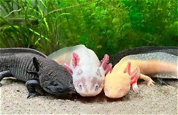

México es uno de los países con más tipos de animales y plantas del mundo. Muchos están en peligro por la contaminación, la caza y la destrucción de su hogar.
| Animal en peligro | Dónde vive |
|---|---|
| Ajolote | Xochimilco, CDMX |
| Jaguar | Selvas del sur |
| Vaquita marina | Golfo de California |